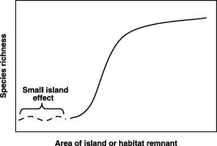
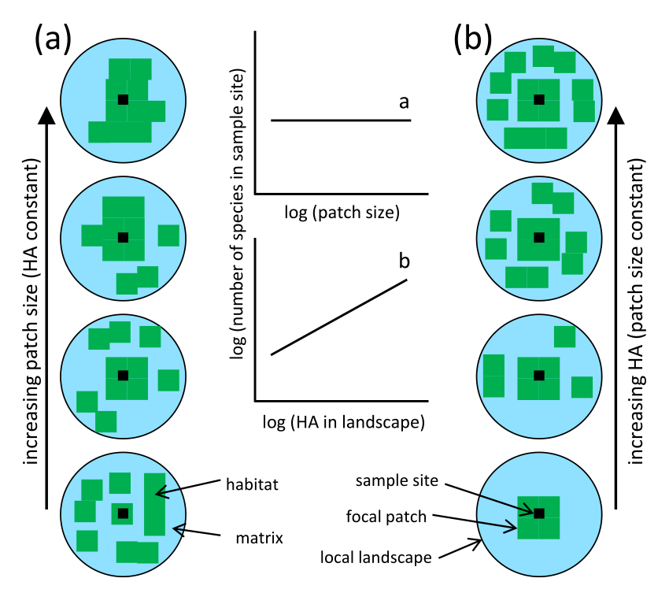
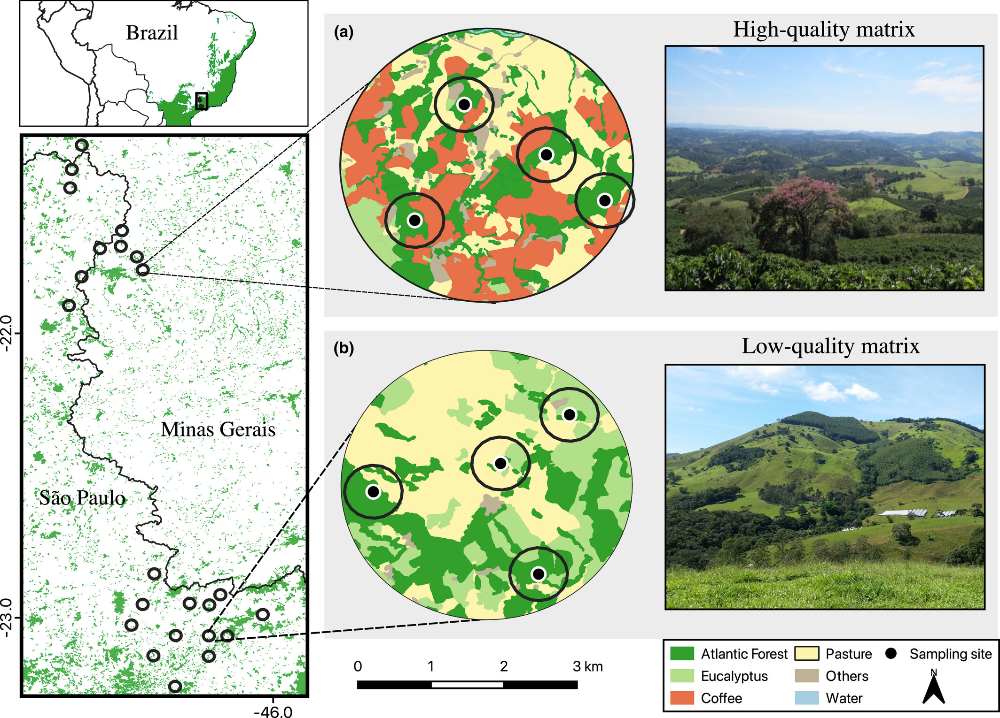

Teoria de Biogeografia de Ilhas e sua Aplicação
Semana 4 - Ecologia da Paisagem (UFPE)
Introdução à TBI
- Proposta originalmente em 1967 por MacArthur e Wilson.
- Padrões de riqueza de espécies em sistemas isolados.
- Base fundamental para a Ecologia de Paisagens.

Contexto histórico e científico
- Surgiu da observação de padrões biológicos em arquipélagos oceânicos.
- Busca explicar por que ilhas diferentes possuem números distintos de espécies.
- trouxe as “primeiras” evidências da relação espécie~área

O Modelo de Equilíbrio Dinâmico
- A riqueza de espécies (S) é o resultado do equilíbrio entre imigração e extinção.
- Imigração: Chegada de novos propágulos vindos de uma fonte continental.
- Extinção: Perda de espécies já estabelecidas no isolamento.

O Efeito da Área
- Áreas maiores sustentam populações maiores e mais estáveis.
- Menor probabilidade de extinção por eventos estocásticos (aleatórios).
- Oferecem maior diversidade de nichos e recursos.
O Efeito do Isolamento
- A distância da fonte determina a taxa de chegada de novos colonizadores.
- Ilhas próximas recebem mais imigração do que ilhas distantes.
- O isolamento dificulta a recolonização após extinções locais.
Síntese: O Equilíbrio Espacial

- Grandes e próximas = Máxima riqueza biológica.
- Pequenas e distantes = Mínima riqueza biológica.
- Modelo permite previsões quantitativas para conservação.
A Transposição para o Continente
- Fragmentos de vegetação nativa são tratados analogamente a ilhas.
- A matriz antrópica (pasto, agricultura) é comparada ao “mar” hostil.
- Consolida o foco no arranjo espacial dos remanescentes.

Fragmentação como “Ilhamento”
- Processo de subdivisão de habitats contínuos em manchas menores.
- Resulta em perda de habitat e aumento do isolamento geográfico.
- Causa o declínio consistente de populações especialistas de interior.

TBI e o Planejamento de Reservas
- Fundamentou o debate SLOSS (Single Large or Several Small).
- Defesa de grandes áreas conectadas para garantir a persistência.
- A configuração espacial dita a viabilidade da fauna a longo prazo.

Métricas Derivadas da Teoria
- Área da Mancha (Patch Area): Determinante da viabilidade populacional local.
- Distância ao Vizinho Próximo (ENN): Proxy para o grau de isolamento.
- Densidade de Manchas: Medida da fragmentação total do mosaico.

Hipótese da quantidade de hábitat
- Abaixo de 30%, a configuração (isolamento) torna-se o fator crítico.
- Acima desse limite, a quantidade total de habitat domina a resposta biológica.
- Conceito vital para a aplicação do Código Florestal Brasileiro.

Críticas e Evolução: A Matriz Terrestre

- Diferente do oceano, a matriz terrestre pode ser permeável.
- Espécies percebem e utilizam a matriz de formas variadas.
- Necessidade de evoluir para modelos de conectividade funcional.
TBI e o Efeito de Borda
- A redução da área aumenta a proporção de bordas nos fragmentos.
- Bordas alteram o microclima e a estabilidade das comunidades de interior.
- Isolamento e bordas agem sinergicamente na perda de espécies.

Crise da Biodiversidade no Antropoceno
- A TBI ajuda a prever o número de extinções futuras pós-desmatamento.
- Ação humana atua como força geológica transformadora.
- 70% das populações de vertebrados declinaram desde 1970 mundialmente.
Conservação em Terras Privadas

- No Brasil, a maioria das “ilhas” de habitat está em mãos privadas.
- Compromisso da meta 30x30 exige o engajamento de proprietários rurais.
- Instrumentos como RPPNs e Reservas Legais são essenciais.
Transição para a Teoria de Metapopulações
- TBI foca na riqueza (comunidade) de uma ilha ou mancha.
- Metapopulação foca na persistência de uma espécie em várias manchas.
- Ambas utilizam a estrutura espacial como variável chave para o manejo.

Conclusão e Visão Integrada
- A TBI revolucionou o entendimento da heterogeneidade espacial.
- Paisagens sustentáveis exigem planejamento em múltiplas escalas.
- Integrar o homem e a natureza no desenho de mosaicos funcionais.